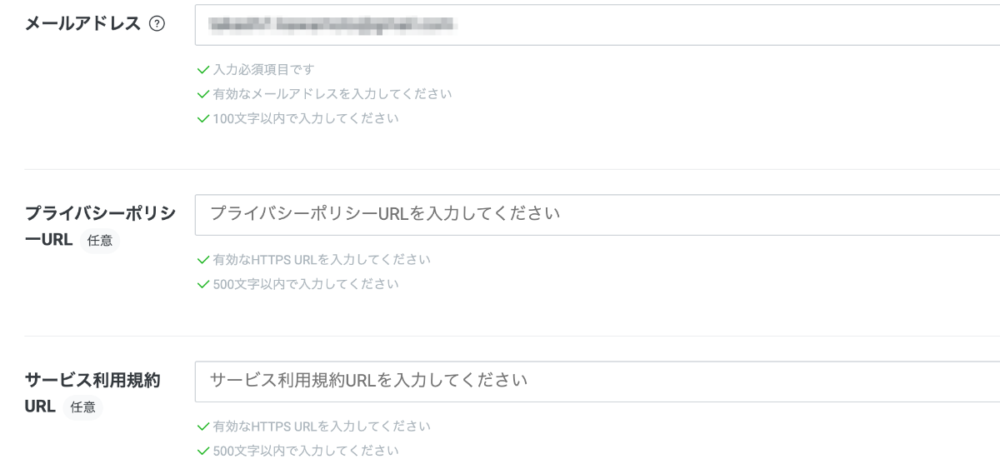
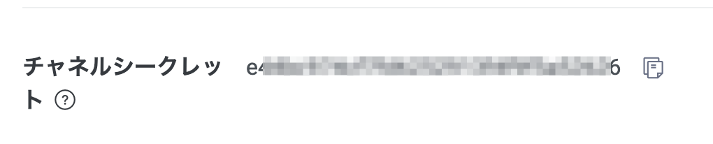
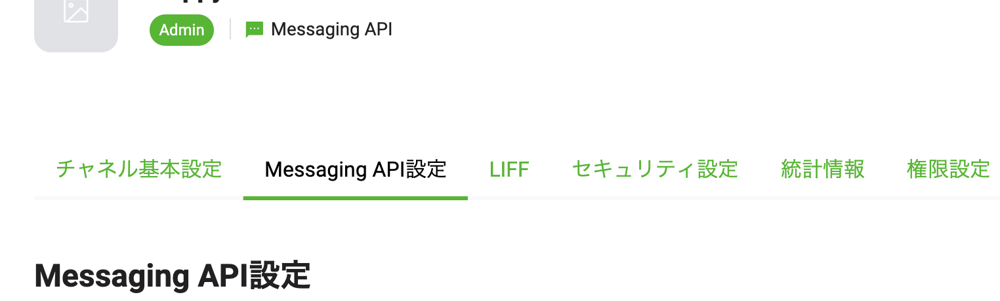

概要
MicrosoftのAIエコシステム、AIの統合開発環境プラットフォームであるAzure AI の使い方を学ぶ初心者向けのハンズオンです。
当日の持ち物
- ブラウザ（Microsoft Edge, Chromeを推奨）がインストールされたPC
- LINEがインストール済みのスマホ
事前準備
- Microsoft Azureのアカウント作成
- GitHubアカウント作成（GitHub Codespacesを利用）
- LINEアカウント作成(こちらのサイトでログインできるかどうかを確認ください)
使用するサービス・ツール
- Microsoft Azure、Azure AI Studio
- GitHub Codespaces（言語は Node.js使います）
- LINE API（Messaging API）
注意事項
若干、クラウド(Microsoft Azure)の課金が発生します。それ以外は課金など発生しません。最後に本日作成したクラウドのサービスリソースは削除をお願いいたします。
参考情報（本資料では扱わない中級レベルの内容）
Azure AI Studioでプロジェクトの作成
- Azure AI Studio のホーム ページに移動します。
- （サインインしていない場合はサインインします。）
- [+ 新しいプロジェクト] を選択します。
- プロジェクトの 作成を行います。プロジェクト名（例：prj-handson-20240826） > 新しいハブの作成 > 「次へ」ボタン
- ハブ名（例：hub-handson-20240826） > サブスクリプション（基本はデフォルトで選択されてるものを使用） > 新しいリソースグループの作成（例：rg-handson-20240826） > 場所は East USを選択 > Azure AIサービスの接続（基本はデフォルトで選択されているものを使用） > 新しい AI Searchの作成（例：ai-search-20240826） > 「次へ」ボタン
- レビューして > 「プロジェクトを作成する」ボタン
しばらくするとプロジェクトが作成され、画面が表示されます。
GPT-4oのモデルをデプロイ
- 左サイドメニューから。 デプロイ > +モデルのデプロイ > 基本モデルをデプロイする
- gpt-4oのモデル選択 > 「確認」ボタン
- （基本的にはデフォルトで入力されている情報のままで）> 1分あたりのトークンレート制限 50kに変更 > 「デプロイ」ボタン
- 「プライグラウンドで開く」ボタン > プレイグラウンドに移動します。
プレイグラウンドでモデルを使う
- チャット セッション にメッセージなどを入力して、モデルの挙動を確認してみてください。
RAGを行う準備
- セットアップ領域から、データを追加するタブ選択 > 「+新しいデータソースを追加する」ボタン
- データを追加する設定画面から、 データソース：ファイルのアップロード選択
- 今回使用するデータファイルをダウンロード してください > ファイルのアップロードから先ほどダウンロードしたファイルをアップロード
- 「次へ」ボタン
- Azure AI Searchの選択、「他のAzure AI Search リソースを接続する」を選択
- デフォルトで１つ接続先が表示されているので、「接続を追加する」ボタンを押して接続

- インデックス名を設定（例：index-20240826） > 「次へ」ボタン
- （基本的にはデフォルトの設定のまま） > 「次へ」ボタン
- 設定内容を確認して「作成」ボタン
RAG (Retrieval-Augmented Generation) を用いたチャットを体験する
- 外部情報（先ほど追加したデータ）を用いて、回答の精度が向上していることを確認します。
下記の公式ドキュメントを参考に実施してみてください
https://learn.microsoft.com/ja-jp/azure/ai-studio/tutorials/deploy-chat-web-app#deploy-your-web-app
（参考）上記の公式ドキュメントの流れを一部記載していきます
- 画面上部のメニューから、 「Deploy」を選択 > 「..as a web app」を選択
- チャット webアプリの名前を入力（例：app-chat-20240826） > サプスクリプション（本日使っているものを選択） > リソースグループ（本日作成したリソースグループを選択、例：rg-handson-20240826） > 場所（例：East US）を選択 > 価格プラン「Basic (B1)」を選択
- 「起動」ボタン
- アクセス許可の同意画面が出るので、「承諾」ボタンで承諾します
- 最終的には下記のようなWebアプリが展開されます（問題が発生する場合は公式のドキュメントの手順を確認してみてください）
下記の公式ドキュメントを参考に実施してください
https://learn.microsoft.com/ja-jp/azure/ai-studio/tutorials/deploy-copilot-ai-studio
（参考）上記の公式ドキュメントの手順を実施すると、下記のような画面が表示されていきます。これがPrompt flowというツールです。
【参考】この章の解説動画
https://youtu.be/ITCOhiyn6LY?si=4Qopuscd4Xc_Nsku&t=51
LINE Developersサイトにアクセス
https://developers.line.me/ja/services/messaging-api/ にアクセス。
「今すぐはじめよう」のボタンを押してください。
「LINEアカウントでログイン」を押してください。

LINEのログインを求められるのでログインしてください。

チャネルの種類
Messaging APIになっているか確認します。

プロバイダ
既にプロバイダーを作っている場合 → 利用するプロバイダーを選択します。

初めて → 新規プロバイダー作成を選択しプロバイダー名を入力します。
（LINEという文字は含められません。）

会社・事業者の所在国・地域

チャネルアイコン
チャネルアイコンを登録します。（今回は必須ではありません）

チャネル名、チャネル説明
下記を入力します。
チャネル名：「HandsonBot」
チャネル説明：「HandsonBotです。」

大業種、小業種

メールアドレス、プライバシーポリシーURL、サービス利用規約URL
メールアドレスを確認します。
プライバシーポリシーURLとサービス利用規約URLは入力しなくても大丈夫です。

作成ボタン
下記２点の利用規約にチェックをして「作成」ボタンを押します。

「OK」を押します。

「同意する」を押します。

LINE公式アカウント(LINE Bot)と友だちになる
QRコードで友だち追加
「Messaging API設定」タブに移動し、QRコードを読み取って、友だち追加をします。

チャネルシークレット、アクセストークンの取得
「チャネル基本設定」タブからチャネルシークレットを、「Messaging API設定」タブからアクセスキーをそれぞれ取得します。
- チャネルシークレット


- アクセストークン


応答モードをOFFにする
LINE Official Account Manager 画面にアクセスして、Botの「応答モード」設定をOFFにします。（デフォルトの設定はONになっており、メッセージを送るたびにデフォルトのメッセージが返ってきてしまうため）


GitHub リポジトリのFork
https://github.com/mochan-tk/Handson-Azure-AI-for-Beginner-with-LINE-Bot にアクセス。
右上のForkボタンを押して自分のGitHubアカウントにリポジトリをコピーしてください。
Ownerを自分のアカウントに選択し、「Create fork」ボタンを押してforkしてください。

GitHub Codespacesの起動
fork後、緑色のCodeボタン > Create codespace on main ボタン を押して起動します
Port Foward設定とURLの取得
表示範囲を ポートの表示範囲 > Publicに変更します。
ローカルアドレス > コピーマーク を押してURLを取得しておきます。

Botサーバーの用意
ターミナル上で下記のコマンドを実行していってください。
- 実行するコマンド
cd local
npm install
export CHANNEL_ACCESS_TOKEN=<your access token>
export CHANNEL_SECRET=<your secret key>
export BASE_URL=<Port Foward設定で取得したURL>
node index.jsWebhookの設定
LINE Developersのコンソール画面に戻って、「Messaging API設定」タブから上記で取得したURL + 「/callback」を設定します。これでLINEのBotを動かす準備は全て整いました。

動作確認
さっそく動かしてみましょう。トーク画面からBotに対してメッセージを送るとオウム返しでメッセージが送られてきたと思います。
（参考）Messaging APIの他の機能を体験したい場合は下記のドキュメントを参照
Azure OpenAIのモデルをチャットボットのアプリで使う
ターミナル上で下記のコマンドを実行していってください。
- 実行するコマンド
cd local
npm install
export CHANNEL_ACCESS_TOKEN=<your access token>
export CHANNEL_SECRET=<your secret key>
export BASE_URL=<Port Foward設定で取得したURL>
export AZURE_OPENAI_KEY=<>
export AZURE_OPENAI_ENDPOINT=<>
export AZURE_OPENAI_DEPLOYMENT_NAME=<>
node index_chatgpt.js
動作確認
さっそく動かしてみましょう。AIから優れた応答が返ってきたのではないでしょうか。
現在は工事中..
LIFFスターターを使って既存のWebアプリをLIFFアプリにコンバートする流れをつかもう！
- 下記の動画をご覧ください
作成したリソースをそのままにすると課金が発生し続けるので、必ずリソースの削除を行ってください。
- 画面右上のプロジェクト名が表示されている部分をクリック > 展開された領域からリソースグループのリンクをクリック
- 表示されたリソースグループの管理画面から、画面上部のメニューにある「Delete resource group」でリソースグループごと削除を実施してください。（リソースグループ配下のリソースもまとめて削除されます）